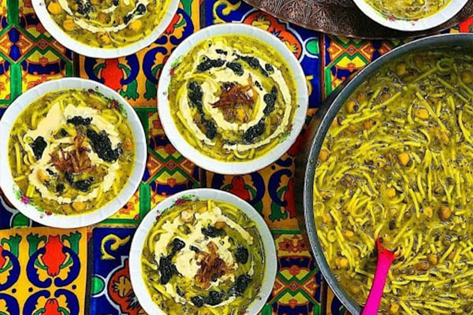

Ash-e Reshteh

Description
Ash reshteh’s flavor is defined by two uniquely Persian ingredients: reshteh and kashk. The soup, served during the festivities leading up to Nowruz, the Persian New Year, wouldn’t be the same without the soup noodles called reshteh, which are saltier and starchier than Italian noodles — though you could substitute linguine in a pinch. Kashk, a form of drained yogurt or whey, is saltier and more sour than Greek yogurt or sour cream. More like feta than yogurt, liquid kashk gives ash its distinct, satisfying flavor. If you can’t find liquid kashk, buy it powdered and hydrate it with warm water to the consistency of sour cream. Look for both items at a Middle Eastern grocery.
Ingredients
- ¼ cup dried chickpeas
- ¼ cup dried white beans, such as navy or cannellini
- Fine sea salt and freshly ground black pepper
- 2 pounds spinach
- 1 pound cilantro (about 3 large bunches)
- 1 pound Italian parsley (about 3 large bunches)
- 2 large bunches dill
- 1 large bunch chives
- About 20 large fresh mint leaves
- 6 tablespoons plus 1/3 cup extra-virgin olive oil
- 2 large yellow onions, 1 finely chopped and 1 thinly sliced
- 2 garlic cloves, minced
- 1 cup dried green or brown lentils
- ½ teaspoon ground turmeric
- 2 quarts chicken or beef stock (preferably homemade), or water
- 1 ½ cups liquid kashk (Persian sun-dried yogurt or whey), plus 1/2 cup, for serving
- 8 ounces reshteh (Persian soup noodles)
- 1 tablespoon dried mint
Steps
- The night before you plan to cook, place chickpeas and white beans in a medium bowl. Add a generous pinch of salt and 2 cups water. Refrigerate overnight.
- The night before or just before cooking, prepare the herbs and greens: Wash spinach, cilantro and parsley, then use a salad spinner to dry very well. Run a knife through the spinach to cut leaves into large pieces. Trim the woody ends from cilantro, parsley and dill so that only leaves and tender stems remain. Roughly chop cilantro, parsley, dill, chives and mint leaves into pieces no larger than a quarter. If preparing ahead of time, wrap chopped greens and herbs in plastic bags and refrigerate overnight.
- To cook, set a large (at least 10-quart) Dutch oven or stockpot over medium heat and add 4 tablespoons oil. When the oil shimmers, add the chopped onion and a generous pinch of salt. Cook, stirring regularly, until the onion is tender and golden brown, 16 to 18 minutes. Add garlic and cook, stirring constantly, for 1 minute.
- Drain the beans and add to onion along with the lentils, turmeric and 1 teaspoon pepper. Cook for 2 minutes, stirring to coat the beans with oil and spices. Add the chopped spinach and herbs, along with stock or water, and stir to combine. Partly cover the pot with a lid and bring to a boil, then reduce the heat to simmer the soup for 1 hour, stirring regularly to prevent the greens from sticking and burning. If the soup remains very thick even after the greens have wilted, add another 1 to 2 cups water, as needed to thin it.
- Place 1 1/2 cups kashk in a medium bowl. Add a ladle or two of hot soup and whisk to dissolve, then add the mixture to the pot. The kashk will change the color of the soup from bright to milky green. Increase the heat and bring the soup to a boil, then break the noodles in half and add to the pot. Stir gently to mix in the noodles and keep them from sticking together, then reduce heat and simmer, stirring occasionally, until noodles are soft and chewy and the beans are completely tender, about 30 minutes.
- In the meantime, prepare the garnishes: Set a medium frying pan over medium-high heat. When the pan is hot, add 2 tablespoons oil. When the oil shimmers, add sliced onion and a generous pinch of salt. Cook, stirring regularly, until golden brown and caramelized, 16 to 18 minutes. Spread cooked onion onto a paper towel-lined plate to absorb excess oil; let cool. Wipe out pan and return to medium heat. Add remaining 1/3 cup oil and warm gently over low heat, then stir in dried mint and remove from heat. Set mint oil aside and allow to steep for at least 5 minutes.
- Place remaining 1/2 cup kashk in a small bowl and thin out with a few tablespoons of water until it’s the texture of thin yogurt. Set aside
- The soup should be as thick as a hearty chili. If it’s any thicker, thin it with water, 1/2 cup at a time. Taste and adjust the seasoning with salt as needed, accounting for the fact that both the noodles and the kashk are well salted.
- To serve, ladle soup into individual bowls. Drizzle with reserved kashk and mint oil, then top with a sprinkling of golden onions.
return to main page